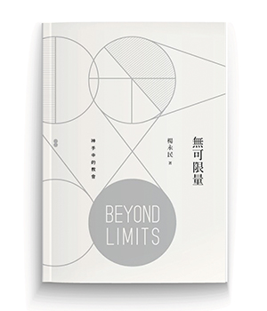
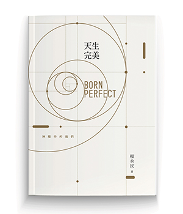

天生完美：認識神眼中的你
2016全新改版值得珍藏楊永民牧師帶領讀者踏上一趟旅程，探索生命的真相，認識全新的自己
上帝對我們的缺陷再了解不過了，祂透徹明白、知道我們過去不堪的歷史。然而，祂看我們天生完美，祂對自己所創造的傑作從不後悔、也不失望，祂總是透過愛的鏡片來看我們每一個人。
楊永民牧師帶領讀者踏上一趟旅程，探索生命的真相，認識全新的自己
上帝對我們的缺陷再了解不過了，祂透徹明白、知道我們過去不堪的歷史。然而，祂看我們天生完美，祂對自己所創造的傑作從不後悔、也不失望，祂總是透過愛的鏡片來看我們每一個人。
2016 © Torch Covenant Church.